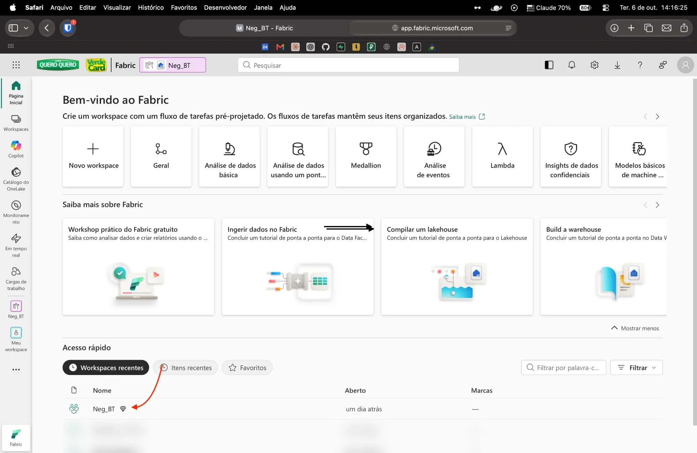
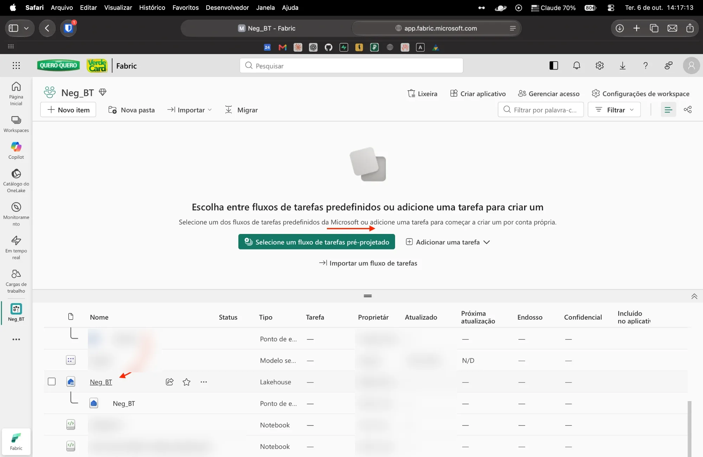
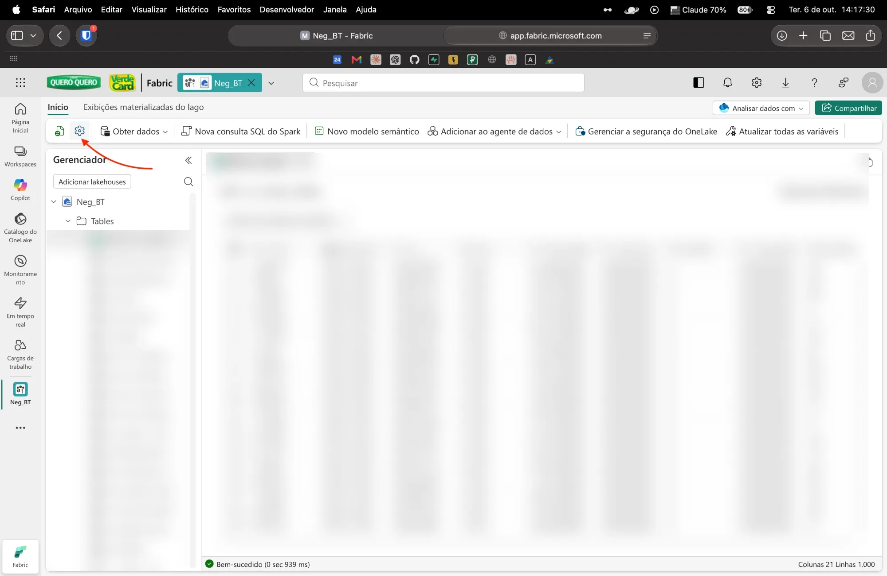
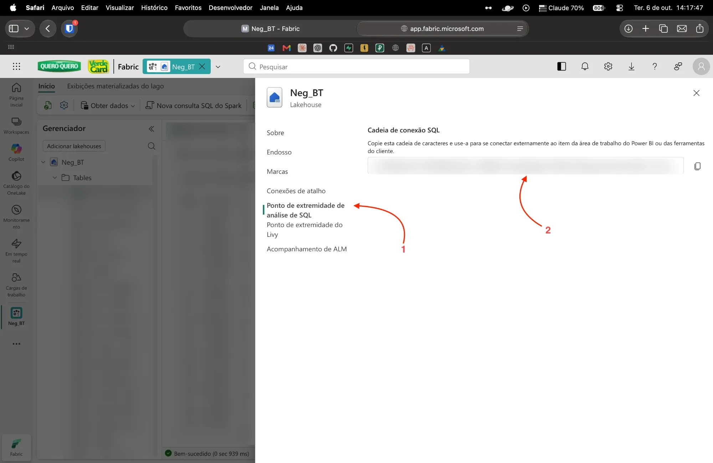

Como pegar o link do Fabric
Leva 1 minuto. Você só precisa ter acesso de leitura ao workspace no Fabric. Não é preciso senha de banco: o login é feito com sua conta Microsoft.
1Abra o workspace
Entre em app.fabric.microsoft.com e, em Acesso rápido → Workspaces recentes, clique no workspace (ex.: Neg_BT).

2Abra o Lakehouse
Na lista de itens, clique no item do tipo Lakehouse (ícone de casinha azul, ex.: Neg_BT). Anote o nome: ele é o nome do banco.

3Clique na engrenagem (Configurações)
Na barra do Lakehouse, clique no ícone de engrenagem, ao lado do botão verde.

4Copie a cadeia de conexão SQL
(1) No menu lateral, clique em Ponto de extremidade de análise de SQL. (2) Em Cadeia de conexão SQL, clique no botão de copiar à direita.
Use o botão de copiar. O texto na tela aparece cortado com “...” e não funciona se for copiado à mão. O link termina em .datawarehouse.fabric.microsoft.com.

5Cole o link e faça o login
Volte ao Claude (ou ao terminal) e cole o link quando for pedido. Em seguida o navegador abre a tela de login da Microsoft: entre com sua conta da empresa. Pronto, a sessão fica salva no seu Mac e se renova sozinha.